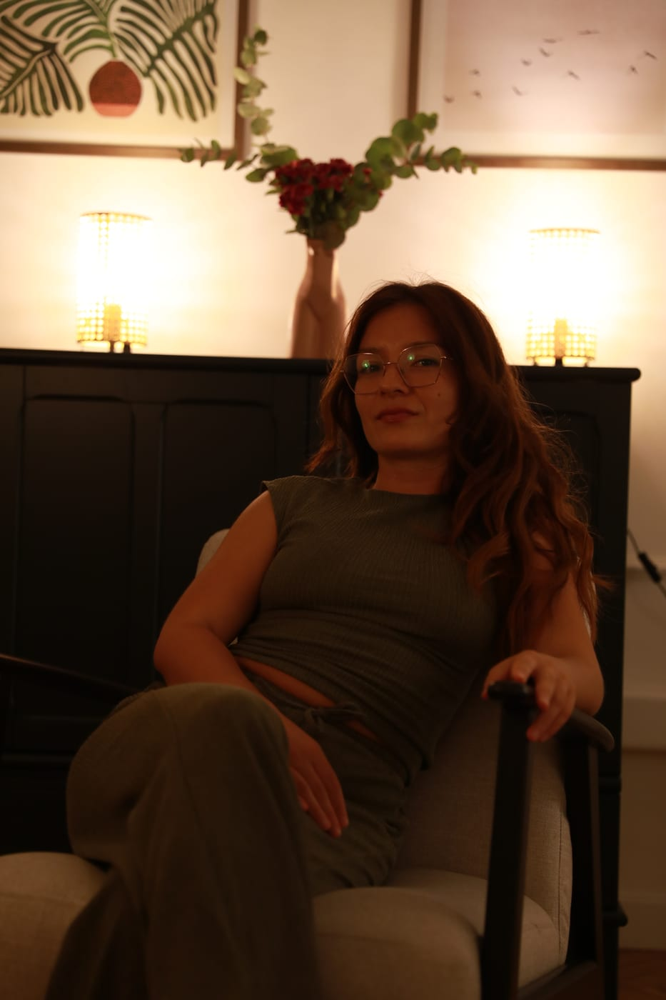

Bodies
speak
before words
Diana Lendić · Soul Space · Split
A massage therapist grounded in body-oriented psychotherapy
My story
It began with movement
All my life I have been in love with movement. Dance, contortion and exploring what my body could do were a huge part of my life. Back then I believed that meant I was connected to my body. I thought I knew it because through it I could dance, create and explore movement.
For a long time I thought I knew my body, only later did I begin to feel it
Realisation
The body isn't just a tool, it's the place we live in
Only later did I realise there is a completely different relationship with the body. One where the body isn't just an instrument of movement, but the place we live in. Where my emotions, memories, boundaries, sadness, joy and sense of safety reside.
When I first heard about body-oriented psychotherapy, something drew me to it immediately. It was a natural continuation of my interest in the body and the psyche, but at the very start of my own inner work I realised how superficial my connection to my body had actually been.

The moment
I let go of control
In therapy, it took me a long time to allow touch. I avoided it and felt uneasy. I grew up with experiences where touch was often rough and hurtful, so my body needed time to believe that a different kind of contact could exist.
There is one moment I remember especially. For the first time I managed to let go of control and allow my therapist to support me through touch. Lying on the floor, I felt my body slowly soften, its weight surrendering to the ground, my mind no longer needing to hold everything together. It felt like floating calmly on the surface of the sea, but this time I wasn't alone. There was another present human being beside me.
That experience changed the way I see touch.
I want every woman to feel that here she doesn't have to be good, resilient or constantly in control

The path
From therapy to touch
Later, through three years of training in body-oriented psychotherapy, I began to understand why that moment mattered so much. I learned about early development, attachment, the nervous system and co-regulation, and increasingly understood how deeply our earliest experiences stay written in the body. How much of what we attribute to stress or character today actually has far deeper roots.
After several years of my own therapeutic process and three years of training in body-oriented psychotherapy, I wanted to extend my understanding of the body through touch. I enrolled in massage school and later continued refining my work through further trainings and manual techniques. Each of them enriched the way I work, but what mattered most to me from the beginning hasn't changed: creating a space where a person can feel safe, seen and in contact with herself.
Practice
How I work today
Today I see touch as a form of communication. I believe bodies speak to each other before we say a single word. Sometimes touch can convey what words struggle to explain: that we are seen, supported, that we don't have to prove anything, and that we can rest for a moment.
In my work I want every woman to feel that here she doesn't have to be "good", resilient or constantly in control. I want her to feel safe, free to say what suits her and what doesn't, and for her body to receive the kind of attention it may not have received in a long time.
Today I work exactly the way I wish someone had worked with me many years ago. With full presence, respect for boundaries, and trust that the body knows its own rhythm when we give it enough time, attention and a safe space.